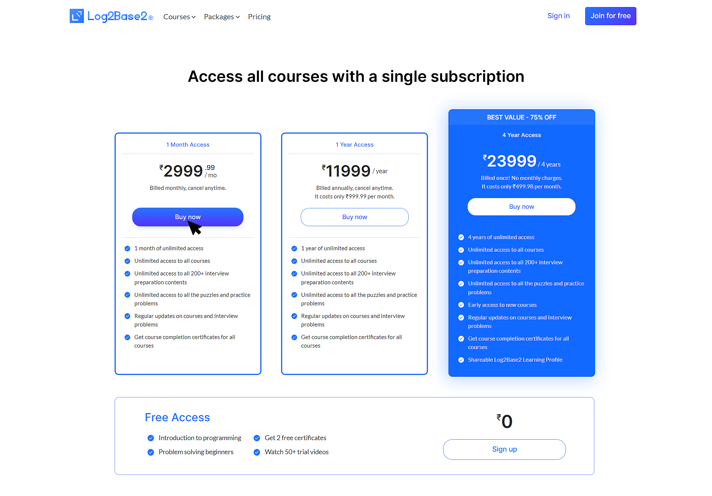
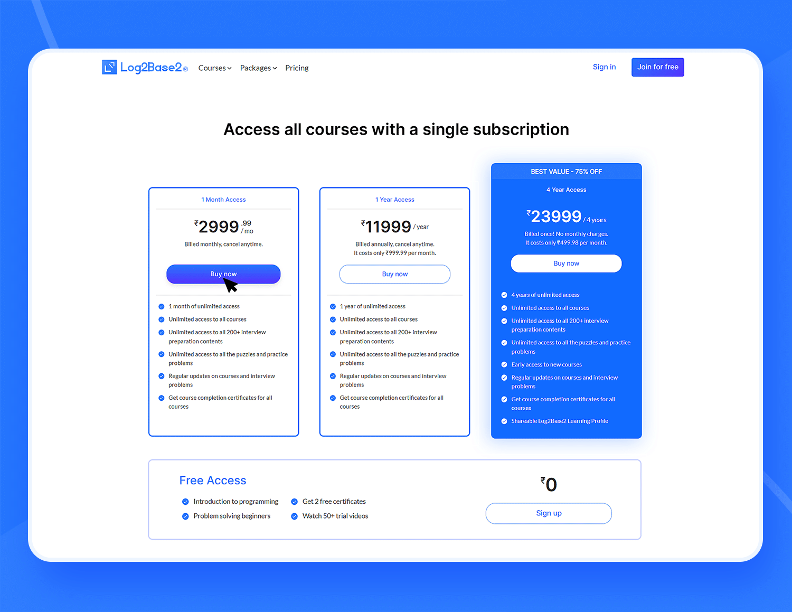

Conversion-focused pricing page redesign for the Log2Base2 platform.
Adobe XD | Photoshop
The pricing page is one of the most consequential pages in any SaaS or subscription product — it's where intent converts to action, and where poor design directly costs revenue. For Log2Base2, the pricing page needed to serve users who arrived with varying levels of commitment: some were ready to subscribe, others were still comparing options, and some needed to be convinced of value before they'd consider price at all. The redesign had to serve all three audiences without compromising clarity for any of them.
The existing pricing page suffered from poor visual separation between plan tiers, making it difficult for users to understand what they were choosing and why one tier might suit them better than another. Feature lists were long and undifferentiated, creating decision fatigue rather than confidence. The CTA hierarchy was weak — there was no clear visual signal directing users toward the recommended plan. The result was a page that generated questions rather than answered them, increasing drop-off at a critical conversion point.
I led the UX design for the pricing page as part of the Log2Base2 product team — responsible for restructuring the information architecture, defining the visual hierarchy across plan tiers, designing the comparison layout, and producing final high-fidelity screens in Adobe XD for developer handoff. I worked with the product manager to define which features were most persuasive to surface at each tier, and collaborated with the marketing team to ensure the copywriting and design were aligned.
The redesign introduced a clear three-tier layout with strong visual boundaries between plans, a visually highlighted "recommended" plan to reduce decision paralysis, and a condensed feature summary above a collapsible full-feature comparison — giving casual visitors a fast answer while still serving power users who want every detail. The CTA buttons were given significantly more visual weight, with colour and size clearly signalling priority. A value-led headline for each tier replaced generic plan names, shifting the framing from price comparison to outcome comparison.
Delivered a clean, scannable pricing layout with strong visual tier differentiation and a clear recommended plan pathway. The design reduced cognitive friction at a key conversion point and aligned the pricing page with the platform's broader design system — giving users a consistent, trustworthy experience from discovery through to purchase.

